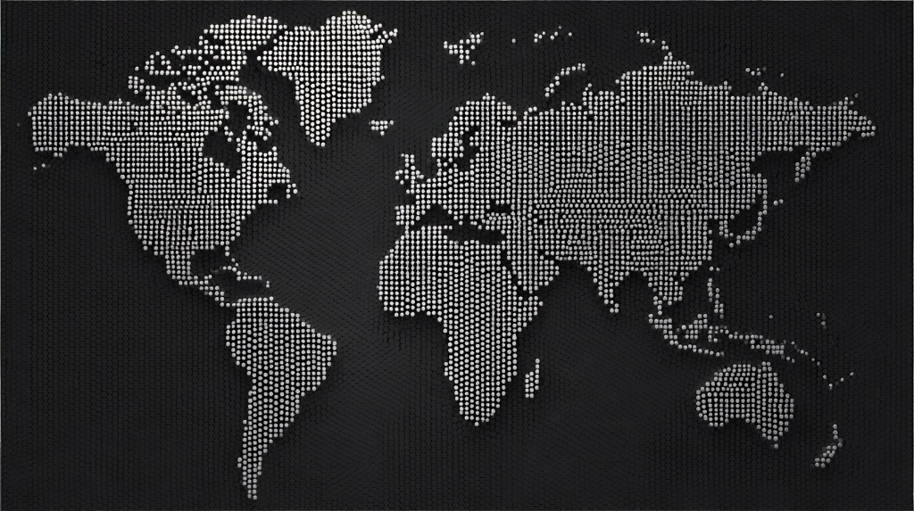

Every cup traces back to a farm, a farmer, and a relationship. This is where Theory's coffee begins.
Theory sources directly from farms and cooperatives across the coffee belt. Every origin in our lineup represents a handshake, a cupping session, and a commitment to return. We pay above market. We visit annually. We don't ghost farmers when the market shifts.

You can't roast your way out of bad sourcing. The bean decides the ceiling.
Every bag of Theory coffee should answer three questions: Where was it grown? Who grew it? Why did we choose it? If any of those answers are "we don't know," the coffee doesn't make the cut.